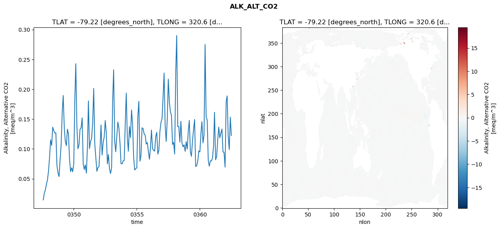
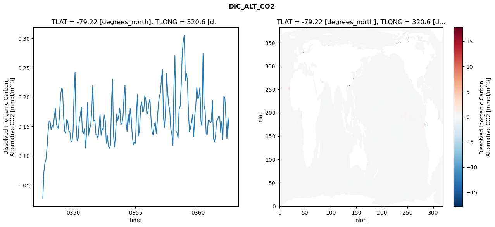
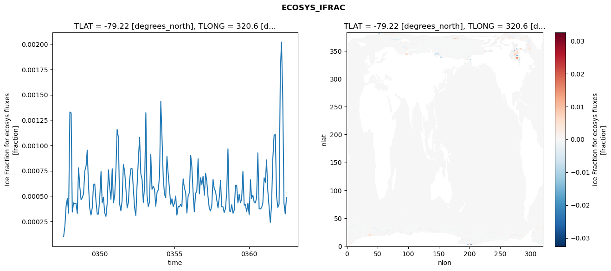
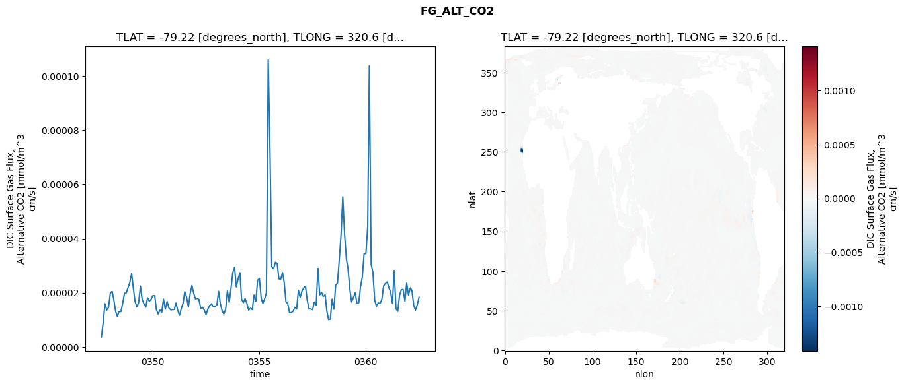

glb-dor_North_Atlantic_basin_041_1999-07-01_00166#
Simulation details#
Case: smyle.cdr-atlas-v0.glb-dor_North_Atlantic_basin_041_1999-07-01_00166.001
Basin: North_Atlantic_basin
Polygon: 41.0
Start date: 1999-07
Show code cell source Hide code cell source
import xarray as xr
import matplotlib.pyplot as plt
Show code cell source Hide code cell source
zarr_store = "/path/to/zarr/store"
# Parameters
zarr_store = "/global/cfs/projectdirs/m4746/Projects/Ocean-CDR-Atlas-v0/data/validation/smyle.cdr-atlas-v0.glb-dor_North_Atlantic_basin_041_1999-07-01_00166.001.validation.zarr"
Show code cell source Hide code cell source
%%time
ds_o = xr.open_zarr(zarr_store).compute()
ds_o
CPU times: user 622 ms, sys: 436 ms, total: 1.06 s
Wall time: 1.32 s
<xarray.Dataset> Size: 2MB
Dimensions: (nlat: 384, nlon: 320, time: 180)
Coordinates:
TLAT float64 8B -79.22
TLONG float64 8B 320.6
ULAT float64 8B -78.95
ULONG float64 8B 321.1
* time (time) object 1kB 0347-08-01 00:00:00 ... 0362-07-01 0...
z_t float32 4B 500.0
Dimensions without coordinates: nlat, nlon
Data variables:
ALK_ALT_CO2_diff (nlat, nlon) float32 492kB nan nan nan ... nan nan nan
ALK_ALT_CO2_rmse (time) float64 1kB 0.01457 0.02648 ... 0.1533 0.1225
DIC_ALT_CO2_diff (nlat, nlon) float32 492kB nan nan nan ... nan nan nan
DIC_ALT_CO2_rmse (time) float64 1kB 0.02778 0.0729 ... 0.1651 0.1452
ECOSYS_IFRAC_diff (nlat, nlon) float32 492kB nan nan nan ... nan nan nan
ECOSYS_IFRAC_rmse (time) float64 1kB 9.984e-05 0.0002007 ... 0.0004877
FG_ALT_CO2_diff (nlat, nlon) float32 492kB nan nan nan ... nan nan nan
FG_ALT_CO2_rmse (time) float64 1kB 3.685e-06 9.044e-06 ... 1.833e-05xarray.Dataset
- nlat: 384
- nlon: 320
- time: 180
- TLAT()float64-79.22
- long_name :
- array of t-grid latitudes
- units :
- degrees_north
array(-79.22052261)
- TLONG()float64320.6
- long_name :
- array of t-grid longitudes
- units :
- degrees_east
array(320.56250892)
- ULAT()float64-78.95
- long_name :
- array of u-grid latitudes
- units :
- degrees_north
array(-78.95289509)
- ULONG()float64321.1
- long_name :
- array of u-grid longitudes
- units :
- degrees_east
array(321.12500894)
- time(time)object0347-08-01 00:00:00 ... 0362-07-...
- bounds :
- time_bound
- long_name :
- time
array([cftime.DatetimeNoLeap(347, 8, 1, 0, 0, 0, 0, has_year_zero=True), cftime.DatetimeNoLeap(347, 9, 1, 0, 0, 0, 0, has_year_zero=True), cftime.DatetimeNoLeap(347, 10, 1, 0, 0, 0, 0, has_year_zero=True), cftime.DatetimeNoLeap(347, 11, 1, 0, 0, 0, 0, has_year_zero=True), cftime.DatetimeNoLeap(347, 12, 1, 0, 0, 0, 0, has_year_zero=True), cftime.DatetimeNoLeap(348, 1, 1, 0, 0, 0, 0, has_year_zero=True), cftime.DatetimeNoLeap(348, 2, 1, 0, 0, 0, 0, has_year_zero=True), cftime.DatetimeNoLeap(348, 3, 1, 0, 0, 0, 0, has_year_zero=True), cftime.DatetimeNoLeap(348, 4, 1, 0, 0, 0, 0, has_year_zero=True), cftime.DatetimeNoLeap(348, 5, 1, 0, 0, 0, 0, has_year_zero=True), cftime.DatetimeNoLeap(348, 6, 1, 0, 0, 0, 0, has_year_zero=True), cftime.DatetimeNoLeap(348, 7, 1, 0, 0, 0, 0, has_year_zero=True), cftime.DatetimeNoLeap(348, 8, 1, 0, 0, 0, 0, has_year_zero=True), cftime.DatetimeNoLeap(348, 9, 1, 0, 0, 0, 0, has_year_zero=True), cftime.DatetimeNoLeap(348, 10, 1, 0, 0, 0, 0, has_year_zero=True), cftime.DatetimeNoLeap(348, 11, 1, 0, 0, 0, 0, has_year_zero=True), cftime.DatetimeNoLeap(348, 12, 1, 0, 0, 0, 0, has_year_zero=True), cftime.DatetimeNoLeap(349, 1, 1, 0, 0, 0, 0, has_year_zero=True), cftime.DatetimeNoLeap(349, 2, 1, 0, 0, 0, 0, has_year_zero=True), cftime.DatetimeNoLeap(349, 3, 1, 0, 0, 0, 0, has_year_zero=True), cftime.DatetimeNoLeap(349, 4, 1, 0, 0, 0, 0, has_year_zero=True), cftime.DatetimeNoLeap(349, 5, 1, 0, 0, 0, 0, has_year_zero=True), cftime.DatetimeNoLeap(349, 6, 1, 0, 0, 0, 0, has_year_zero=True), cftime.DatetimeNoLeap(349, 7, 1, 0, 0, 0, 0, has_year_zero=True), cftime.DatetimeNoLeap(349, 8, 1, 0, 0, 0, 0, has_year_zero=True), cftime.DatetimeNoLeap(349, 9, 1, 0, 0, 0, 0, has_year_zero=True), cftime.DatetimeNoLeap(349, 10, 1, 0, 0, 0, 0, has_year_zero=True), cftime.DatetimeNoLeap(349, 11, 1, 0, 0, 0, 0, has_year_zero=True), cftime.DatetimeNoLeap(349, 12, 1, 0, 0, 0, 0, has_year_zero=True), cftime.DatetimeNoLeap(350, 1, 1, 0, 0, 0, 0, has_year_zero=True), cftime.DatetimeNoLeap(350, 2, 1, 0, 0, 0, 0, has_year_zero=True), cftime.DatetimeNoLeap(350, 3, 1, 0, 0, 0, 0, has_year_zero=True), cftime.DatetimeNoLeap(350, 4, 1, 0, 0, 0, 0, has_year_zero=True), cftime.DatetimeNoLeap(350, 5, 1, 0, 0, 0, 0, has_year_zero=True), cftime.DatetimeNoLeap(350, 6, 1, 0, 0, 0, 0, has_year_zero=True), cftime.DatetimeNoLeap(350, 7, 1, 0, 0, 0, 0, has_year_zero=True), cftime.DatetimeNoLeap(350, 8, 1, 0, 0, 0, 0, has_year_zero=True), cftime.DatetimeNoLeap(350, 9, 1, 0, 0, 0, 0, has_year_zero=True), cftime.DatetimeNoLeap(350, 10, 1, 0, 0, 0, 0, has_year_zero=True), cftime.DatetimeNoLeap(350, 11, 1, 0, 0, 0, 0, has_year_zero=True), cftime.DatetimeNoLeap(350, 12, 1, 0, 0, 0, 0, has_year_zero=True), cftime.DatetimeNoLeap(351, 1, 1, 0, 0, 0, 0, has_year_zero=True), cftime.DatetimeNoLeap(351, 2, 1, 0, 0, 0, 0, has_year_zero=True), cftime.DatetimeNoLeap(351, 3, 1, 0, 0, 0, 0, has_year_zero=True), cftime.DatetimeNoLeap(351, 4, 1, 0, 0, 0, 0, has_year_zero=True), cftime.DatetimeNoLeap(351, 5, 1, 0, 0, 0, 0, has_year_zero=True), cftime.DatetimeNoLeap(351, 6, 1, 0, 0, 0, 0, has_year_zero=True), cftime.DatetimeNoLeap(351, 7, 1, 0, 0, 0, 0, has_year_zero=True), cftime.DatetimeNoLeap(351, 8, 1, 0, 0, 0, 0, has_year_zero=True), cftime.DatetimeNoLeap(351, 9, 1, 0, 0, 0, 0, has_year_zero=True), cftime.DatetimeNoLeap(351, 10, 1, 0, 0, 0, 0, has_year_zero=True), cftime.DatetimeNoLeap(351, 11, 1, 0, 0, 0, 0, has_year_zero=True), cftime.DatetimeNoLeap(351, 12, 1, 0, 0, 0, 0, has_year_zero=True), cftime.DatetimeNoLeap(352, 1, 1, 0, 0, 0, 0, has_year_zero=True), cftime.DatetimeNoLeap(352, 2, 1, 0, 0, 0, 0, has_year_zero=True), cftime.DatetimeNoLeap(352, 3, 1, 0, 0, 0, 0, has_year_zero=True), cftime.DatetimeNoLeap(352, 4, 1, 0, 0, 0, 0, has_year_zero=True), cftime.DatetimeNoLeap(352, 5, 1, 0, 0, 0, 0, has_year_zero=True), cftime.DatetimeNoLeap(352, 6, 1, 0, 0, 0, 0, has_year_zero=True), cftime.DatetimeNoLeap(352, 7, 1, 0, 0, 0, 0, has_year_zero=True), cftime.DatetimeNoLeap(352, 8, 1, 0, 0, 0, 0, has_year_zero=True), cftime.DatetimeNoLeap(352, 9, 1, 0, 0, 0, 0, has_year_zero=True), cftime.DatetimeNoLeap(352, 10, 1, 0, 0, 0, 0, has_year_zero=True), cftime.DatetimeNoLeap(352, 11, 1, 0, 0, 0, 0, has_year_zero=True), cftime.DatetimeNoLeap(352, 12, 1, 0, 0, 0, 0, has_year_zero=True), cftime.DatetimeNoLeap(353, 1, 1, 0, 0, 0, 0, has_year_zero=True), cftime.DatetimeNoLeap(353, 2, 1, 0, 0, 0, 0, has_year_zero=True), cftime.DatetimeNoLeap(353, 3, 1, 0, 0, 0, 0, has_year_zero=True), cftime.DatetimeNoLeap(353, 4, 1, 0, 0, 0, 0, has_year_zero=True), cftime.DatetimeNoLeap(353, 5, 1, 0, 0, 0, 0, has_year_zero=True), cftime.DatetimeNoLeap(353, 6, 1, 0, 0, 0, 0, has_year_zero=True), cftime.DatetimeNoLeap(353, 7, 1, 0, 0, 0, 0, has_year_zero=True), cftime.DatetimeNoLeap(353, 8, 1, 0, 0, 0, 0, has_year_zero=True), cftime.DatetimeNoLeap(353, 9, 1, 0, 0, 0, 0, has_year_zero=True), cftime.DatetimeNoLeap(353, 10, 1, 0, 0, 0, 0, has_year_zero=True), cftime.DatetimeNoLeap(353, 11, 1, 0, 0, 0, 0, has_year_zero=True), cftime.DatetimeNoLeap(353, 12, 1, 0, 0, 0, 0, has_year_zero=True), cftime.DatetimeNoLeap(354, 1, 1, 0, 0, 0, 0, has_year_zero=True), cftime.DatetimeNoLeap(354, 2, 1, 0, 0, 0, 0, has_year_zero=True), cftime.DatetimeNoLeap(354, 3, 1, 0, 0, 0, 0, has_year_zero=True), cftime.DatetimeNoLeap(354, 4, 1, 0, 0, 0, 0, has_year_zero=True), cftime.DatetimeNoLeap(354, 5, 1, 0, 0, 0, 0, has_year_zero=True), cftime.DatetimeNoLeap(354, 6, 1, 0, 0, 0, 0, has_year_zero=True), cftime.DatetimeNoLeap(354, 7, 1, 0, 0, 0, 0, has_year_zero=True), cftime.DatetimeNoLeap(354, 8, 1, 0, 0, 0, 0, has_year_zero=True), cftime.DatetimeNoLeap(354, 9, 1, 0, 0, 0, 0, has_year_zero=True), cftime.DatetimeNoLeap(354, 10, 1, 0, 0, 0, 0, has_year_zero=True), cftime.DatetimeNoLeap(354, 11, 1, 0, 0, 0, 0, has_year_zero=True), cftime.DatetimeNoLeap(354, 12, 1, 0, 0, 0, 0, has_year_zero=True), cftime.DatetimeNoLeap(355, 1, 1, 0, 0, 0, 0, has_year_zero=True), cftime.DatetimeNoLeap(355, 2, 1, 0, 0, 0, 0, has_year_zero=True), cftime.DatetimeNoLeap(355, 3, 1, 0, 0, 0, 0, has_year_zero=True), cftime.DatetimeNoLeap(355, 4, 1, 0, 0, 0, 0, has_year_zero=True), cftime.DatetimeNoLeap(355, 5, 1, 0, 0, 0, 0, has_year_zero=True), cftime.DatetimeNoLeap(355, 6, 1, 0, 0, 0, 0, has_year_zero=True), cftime.DatetimeNoLeap(355, 7, 1, 0, 0, 0, 0, has_year_zero=True), cftime.DatetimeNoLeap(355, 8, 1, 0, 0, 0, 0, has_year_zero=True), cftime.DatetimeNoLeap(355, 9, 1, 0, 0, 0, 0, has_year_zero=True), cftime.DatetimeNoLeap(355, 10, 1, 0, 0, 0, 0, has_year_zero=True), cftime.DatetimeNoLeap(355, 11, 1, 0, 0, 0, 0, has_year_zero=True), cftime.DatetimeNoLeap(355, 12, 1, 0, 0, 0, 0, has_year_zero=True), cftime.DatetimeNoLeap(356, 1, 1, 0, 0, 0, 0, has_year_zero=True), cftime.DatetimeNoLeap(356, 2, 1, 0, 0, 0, 0, has_year_zero=True), cftime.DatetimeNoLeap(356, 3, 1, 0, 0, 0, 0, has_year_zero=True), cftime.DatetimeNoLeap(356, 4, 1, 0, 0, 0, 0, has_year_zero=True), cftime.DatetimeNoLeap(356, 5, 1, 0, 0, 0, 0, has_year_zero=True), cftime.DatetimeNoLeap(356, 6, 1, 0, 0, 0, 0, has_year_zero=True), cftime.DatetimeNoLeap(356, 7, 1, 0, 0, 0, 0, has_year_zero=True), cftime.DatetimeNoLeap(356, 8, 1, 0, 0, 0, 0, has_year_zero=True), cftime.DatetimeNoLeap(356, 9, 1, 0, 0, 0, 0, has_year_zero=True), cftime.DatetimeNoLeap(356, 10, 1, 0, 0, 0, 0, has_year_zero=True), cftime.DatetimeNoLeap(356, 11, 1, 0, 0, 0, 0, has_year_zero=True), cftime.DatetimeNoLeap(356, 12, 1, 0, 0, 0, 0, has_year_zero=True), cftime.DatetimeNoLeap(357, 1, 1, 0, 0, 0, 0, has_year_zero=True), cftime.DatetimeNoLeap(357, 2, 1, 0, 0, 0, 0, has_year_zero=True), cftime.DatetimeNoLeap(357, 3, 1, 0, 0, 0, 0, has_year_zero=True), cftime.DatetimeNoLeap(357, 4, 1, 0, 0, 0, 0, has_year_zero=True), cftime.DatetimeNoLeap(357, 5, 1, 0, 0, 0, 0, has_year_zero=True), cftime.DatetimeNoLeap(357, 6, 1, 0, 0, 0, 0, has_year_zero=True), cftime.DatetimeNoLeap(357, 7, 1, 0, 0, 0, 0, has_year_zero=True), cftime.DatetimeNoLeap(357, 8, 1, 0, 0, 0, 0, has_year_zero=True), cftime.DatetimeNoLeap(357, 9, 1, 0, 0, 0, 0, has_year_zero=True), cftime.DatetimeNoLeap(357, 10, 1, 0, 0, 0, 0, has_year_zero=True), cftime.DatetimeNoLeap(357, 11, 1, 0, 0, 0, 0, has_year_zero=True), cftime.DatetimeNoLeap(357, 12, 1, 0, 0, 0, 0, has_year_zero=True), cftime.DatetimeNoLeap(358, 1, 1, 0, 0, 0, 0, has_year_zero=True), cftime.DatetimeNoLeap(358, 2, 1, 0, 0, 0, 0, has_year_zero=True), cftime.DatetimeNoLeap(358, 3, 1, 0, 0, 0, 0, has_year_zero=True), cftime.DatetimeNoLeap(358, 4, 1, 0, 0, 0, 0, has_year_zero=True), cftime.DatetimeNoLeap(358, 5, 1, 0, 0, 0, 0, has_year_zero=True), cftime.DatetimeNoLeap(358, 6, 1, 0, 0, 0, 0, has_year_zero=True), cftime.DatetimeNoLeap(358, 7, 1, 0, 0, 0, 0, has_year_zero=True), cftime.DatetimeNoLeap(358, 8, 1, 0, 0, 0, 0, has_year_zero=True), cftime.DatetimeNoLeap(358, 9, 1, 0, 0, 0, 0, has_year_zero=True), cftime.DatetimeNoLeap(358, 10, 1, 0, 0, 0, 0, has_year_zero=True), cftime.DatetimeNoLeap(358, 11, 1, 0, 0, 0, 0, has_year_zero=True), cftime.DatetimeNoLeap(358, 12, 1, 0, 0, 0, 0, has_year_zero=True), cftime.DatetimeNoLeap(359, 1, 1, 0, 0, 0, 0, has_year_zero=True), cftime.DatetimeNoLeap(359, 2, 1, 0, 0, 0, 0, has_year_zero=True), cftime.DatetimeNoLeap(359, 3, 1, 0, 0, 0, 0, has_year_zero=True), cftime.DatetimeNoLeap(359, 4, 1, 0, 0, 0, 0, has_year_zero=True), cftime.DatetimeNoLeap(359, 5, 1, 0, 0, 0, 0, has_year_zero=True), cftime.DatetimeNoLeap(359, 6, 1, 0, 0, 0, 0, has_year_zero=True), cftime.DatetimeNoLeap(359, 7, 1, 0, 0, 0, 0, has_year_zero=True), cftime.DatetimeNoLeap(359, 8, 1, 0, 0, 0, 0, has_year_zero=True), cftime.DatetimeNoLeap(359, 9, 1, 0, 0, 0, 0, has_year_zero=True), cftime.DatetimeNoLeap(359, 10, 1, 0, 0, 0, 0, has_year_zero=True), cftime.DatetimeNoLeap(359, 11, 1, 0, 0, 0, 0, has_year_zero=True), cftime.DatetimeNoLeap(359, 12, 1, 0, 0, 0, 0, has_year_zero=True), cftime.DatetimeNoLeap(360, 1, 1, 0, 0, 0, 0, has_year_zero=True), cftime.DatetimeNoLeap(360, 2, 1, 0, 0, 0, 0, has_year_zero=True), cftime.DatetimeNoLeap(360, 3, 1, 0, 0, 0, 0, has_year_zero=True), cftime.DatetimeNoLeap(360, 4, 1, 0, 0, 0, 0, has_year_zero=True), cftime.DatetimeNoLeap(360, 5, 1, 0, 0, 0, 0, has_year_zero=True), cftime.DatetimeNoLeap(360, 6, 1, 0, 0, 0, 0, has_year_zero=True), cftime.DatetimeNoLeap(360, 7, 1, 0, 0, 0, 0, has_year_zero=True), cftime.DatetimeNoLeap(360, 8, 1, 0, 0, 0, 0, has_year_zero=True), cftime.DatetimeNoLeap(360, 9, 1, 0, 0, 0, 0, has_year_zero=True), cftime.DatetimeNoLeap(360, 10, 1, 0, 0, 0, 0, has_year_zero=True), cftime.DatetimeNoLeap(360, 11, 1, 0, 0, 0, 0, has_year_zero=True), cftime.DatetimeNoLeap(360, 12, 1, 0, 0, 0, 0, has_year_zero=True), cftime.DatetimeNoLeap(361, 1, 1, 0, 0, 0, 0, has_year_zero=True), cftime.DatetimeNoLeap(361, 2, 1, 0, 0, 0, 0, has_year_zero=True), cftime.DatetimeNoLeap(361, 3, 1, 0, 0, 0, 0, has_year_zero=True), cftime.DatetimeNoLeap(361, 4, 1, 0, 0, 0, 0, has_year_zero=True), cftime.DatetimeNoLeap(361, 5, 1, 0, 0, 0, 0, has_year_zero=True), cftime.DatetimeNoLeap(361, 6, 1, 0, 0, 0, 0, has_year_zero=True), cftime.DatetimeNoLeap(361, 7, 1, 0, 0, 0, 0, has_year_zero=True), cftime.DatetimeNoLeap(361, 8, 1, 0, 0, 0, 0, has_year_zero=True), cftime.DatetimeNoLeap(361, 9, 1, 0, 0, 0, 0, has_year_zero=True), cftime.DatetimeNoLeap(361, 10, 1, 0, 0, 0, 0, has_year_zero=True), cftime.DatetimeNoLeap(361, 11, 1, 0, 0, 0, 0, has_year_zero=True), cftime.DatetimeNoLeap(361, 12, 1, 0, 0, 0, 0, has_year_zero=True), cftime.DatetimeNoLeap(362, 1, 1, 0, 0, 0, 0, has_year_zero=True), cftime.DatetimeNoLeap(362, 2, 1, 0, 0, 0, 0, has_year_zero=True), cftime.DatetimeNoLeap(362, 3, 1, 0, 0, 0, 0, has_year_zero=True), cftime.DatetimeNoLeap(362, 4, 1, 0, 0, 0, 0, has_year_zero=True), cftime.DatetimeNoLeap(362, 5, 1, 0, 0, 0, 0, has_year_zero=True), cftime.DatetimeNoLeap(362, 6, 1, 0, 0, 0, 0, has_year_zero=True), cftime.DatetimeNoLeap(362, 7, 1, 0, 0, 0, 0, has_year_zero=True)], dtype=object) - z_t()float32500.0
- long_name :
- depth from surface to midpoint of layer
- positive :
- down
- units :
- centimeters
- valid_max :
- 537500.0
- valid_min :
- 500.0
array(500., dtype=float32)
- ALK_ALT_CO2_diff(nlat, nlon)float32nan nan nan nan ... nan nan nan nan
- cell_methods :
- time: mean
- grid_loc :
- 3111
- long_name :
- Alkalinity, Alternative CO2
- units :
- meq/m^3
array([[ nan, nan, nan, ..., nan, nan, nan], [ nan, nan, nan, ..., nan, nan, nan], [-0.0012207 , 0.00195312, 0.0078125 , ..., nan, nan, nan], ..., [ nan, nan, nan, ..., nan, nan, nan], [ nan, nan, nan, ..., nan, nan, nan], [ nan, nan, nan, ..., nan, nan, nan]], dtype=float32) - ALK_ALT_CO2_rmse(time)float640.01457 0.02648 ... 0.1533 0.1225
- cell_methods :
- time: mean
- grid_loc :
- 3111
- long_name :
- Alkalinity, Alternative CO2
- units :
- meq/m^3
array([0.01456509, 0.02647887, 0.03123536, 0.04127345, 0.04832509, 0.06346929, 0.08766583, 0.11523147, 0.10583132, 0.13658242, 0.13070994, 0.12663014, 0.12691785, 0.07172767, 0.060024 , 0.05367868, 0.08175928, 0.10762985, 0.16143832, 0.18960415, 0.13581095, 0.11285043, 0.10540543, 0.13318179, 0.12528251, 0.08176113, 0.06196195, 0.06849121, 0.06166061, 0.07554849, 0.18453378, 0.24286637, 0.13788729, 0.10023557, 0.10628717, 0.13287094, 0.13521728, 0.15205319, 0.07550701, 0.06554732, 0.07321611, 0.05947209, 0.10435236, 0.18041501, 0.10056763, 0.11238323, 0.11756441, 0.14293494, 0.20141703, 0.10869935, 0.08567195, 0.06248711, 0.06877699, 0.07016128, 0.10223735, 0.14033269, 0.08976636, 0.11036441, 0.12043997, 0.14770089, 0.1257774 , 0.07492413, 0.09066392, 0.06683929, 0.05883305, 0.06819586, 0.18312515, 0.2325428 , 0.11282058, 0.09514366, 0.12141079, 0.14512327, 0.13492663, 0.10974339, 0.07539846, 0.07494352, 0.08007309, 0.08053511, 0.14460202, 0.19355055, 0.11894002, 0.09610828, 0.13747978, 0.11891236, 0.16531915, 0.1404162 , 0.08517112, 0.06470966, 0.06709507, 0.06827114, 0.15628029, 0.17982184, 0.07945736, 0.08852968, 0.13541131, 0.13429091, 0.12507541, 0.12280899, 0.10810426, 0.11071846, 0.09586537, 0.08263857, 0.10333355, 0.13170842, 0.10063781, 0.09759797, 0.09636197, 0.12068639, 0.12789428, 0.09127694, 0.09800422, 0.12982197, 0.14425879, 0.15076671, 0.18920143, 0.22719275, 0.13936883, 0.11252878, 0.14978881, 0.21697142, 0.17831621, 0.16181066, 0.1563511 , 0.10745442, 0.11103918, 0.09155011, 0.22772245, 0.29006147, 0.13733392, 0.1376469 , 0.1114299 , 0.14641273, 0.10973677, 0.10351916, 0.1070247 , 0.09598356, 0.11223485, 0.09977384, 0.13157665, 0.14781485, 0.09536138, 0.08756607, 0.11324752, 0.13216894, 0.14930828, 0.07058245, 0.0718817 , 0.0797554 , 0.0966612 , 0.09491486, 0.12634927, 0.1458116 , 0.11017353, 0.1228549 , 0.27510387, 0.15390095, 0.14825124, 0.08046177, 0.07104076, 0.08015321, 0.07991984, 0.08433366, 0.1055602 , 0.16141896, 0.08191727, 0.08709817, 0.115074 , 0.13658105, 0.11856551, 0.12665845, 0.13344154, 0.0950253 , 0.09442387, 0.06943245, 0.17957929, 0.18884039, 0.12140467, 0.09880784, 0.15334985, 0.12252037]) - DIC_ALT_CO2_diff(nlat, nlon)float32nan nan nan nan ... nan nan nan nan
- cell_methods :
- time: mean
- grid_loc :
- 3111
- long_name :
- Dissolved Inorganic Carbon, Alternative CO2
- units :
- mmol/m^3
array([[ nan, nan, nan, ..., nan, nan, nan], [ nan, nan, nan, ..., nan, nan, nan], [-0.00195312, 0.00317383, 0.00415039, ..., nan, nan, nan], ..., [ nan, nan, nan, ..., nan, nan, nan], [ nan, nan, nan, ..., nan, nan, nan], [ nan, nan, nan, ..., nan, nan, nan]], dtype=float32) - DIC_ALT_CO2_rmse(time)float640.02778 0.0729 ... 0.1651 0.1452
- cell_methods :
- time: mean
- grid_loc :
- 3111
- long_name :
- Dissolved Inorganic Carbon, Alternative CO2
- units :
- mmol/m^3
array([0.02777641, 0.07289587, 0.08816247, 0.09332917, 0.11386208, 0.14034485, 0.15936309, 0.15863614, 0.14410374, 0.15231583, 0.14850883, 0.16548918, 0.18090052, 0.15531236, 0.14769783, 0.14693917, 0.16952377, 0.20232383, 0.21560867, 0.21320916, 0.16717676, 0.14204883, 0.13832943, 0.16238815, 0.1574387 , 0.14200962, 0.14103429, 0.12493541, 0.12445512, 0.13959636, 0.20800004, 0.24245475, 0.15324193, 0.12551621, 0.13051584, 0.15789133, 0.16951114, 0.18233342, 0.14158746, 0.13801302, 0.14584477, 0.11346295, 0.14045505, 0.19054634, 0.13506535, 0.14745191, 0.1501629 , 0.17713175, 0.21982395, 0.15899083, 0.16162086, 0.13627983, 0.13460335, 0.13020951, 0.14854745, 0.17112837, 0.13496468, 0.14659444, 0.14369847, 0.16962822, 0.16045793, 0.12174951, 0.13408209, 0.11671206, 0.11305357, 0.11826633, 0.1922406 , 0.23087376, 0.13429691, 0.11474686, 0.14027136, 0.17151491, 0.16040726, 0.16896048, 0.18114592, 0.15352366, 0.15496903, 0.16568097, 0.20024137, 0.22040658, 0.1556012 , 0.14171282, 0.1706943 , 0.15260186, 0.18071562, 0.16382369, 0.13298547, 0.11903967, 0.12343366, 0.12174112, 0.17341019, 0.20446278, 0.13455355, 0.14344866, 0.18388116, 0.19214854, 0.17527039, 0.17634281, 0.20201547, 0.19588286, 0.17000073, 0.17605352, 0.19023494, 0.19692293, 0.16398337, 0.14170354, 0.13543825, 0.15118027, 0.15758716, 0.13798012, 0.15855539, 0.18702036, 0.20156615, 0.20780522, 0.23233391, 0.24694297, 0.16545823, 0.14874785, 0.17761518, 0.24062811, 0.20774092, 0.1868726 , 0.177401 , 0.14571815, 0.13724855, 0.11779043, 0.22004407, 0.27060314, 0.14228372, 0.13939523, 0.13063385, 0.17912083, 0.18462029, 0.22146296, 0.27407741, 0.29628824, 0.30574226, 0.22780379, 0.24018636, 0.2295075 , 0.17269129, 0.14098375, 0.14711023, 0.15876132, 0.16977139, 0.13296837, 0.16890364, 0.18603945, 0.21701234, 0.1970316 , 0.2010849 , 0.2163965 , 0.15886712, 0.1507578 , 0.27493911, 0.18581478, 0.17746403, 0.13754764, 0.13624271, 0.16057284, 0.16016313, 0.15632824, 0.1589184 , 0.1949502 , 0.1301729 , 0.1240199 , 0.13314265, 0.15959783, 0.16141989, 0.16745399, 0.16653851, 0.13963706, 0.15885724, 0.12793338, 0.20171789, 0.19916481, 0.16282202, 0.12900164, 0.16509325, 0.14522467]) - ECOSYS_IFRAC_diff(nlat, nlon)float32nan nan nan nan ... nan nan nan nan
- cell_methods :
- time: mean
- grid_loc :
- 2110
- long_name :
- Ice Fraction for ecosys fluxes
- units :
- fraction
array([[ nan, nan, nan, ..., nan, nan, nan], [ nan, nan, nan, ..., nan, nan, nan], [1.5556812e-05, 3.2782555e-06, 1.1444092e-05, ..., nan, nan, nan], ..., [ nan, nan, nan, ..., nan, nan, nan], [ nan, nan, nan, ..., nan, nan, nan], [ nan, nan, nan, ..., nan, nan, nan]], dtype=float32) - ECOSYS_IFRAC_rmse(time)float649.984e-05 0.0002007 ... 0.0004877
- cell_methods :
- time: mean
- grid_loc :
- 2110
- long_name :
- Ice Fraction for ecosys fluxes
- units :
- fraction
array([9.98360767e-05, 2.00719229e-04, 4.04765242e-04, 4.77982616e-04, 3.31059632e-04, 1.33104634e-03, 1.32080886e-03, 3.42047635e-04, 4.34389539e-04, 4.22134897e-04, 4.28890032e-04, 3.28458311e-04, 7.78752800e-04, 5.91080916e-04, 4.64356536e-04, 4.84261785e-04, 5.23527906e-04, 7.48080455e-04, 7.99552567e-04, 9.54716410e-04, 6.03143015e-04, 3.79536249e-04, 3.12234797e-04, 3.83537127e-04, 6.10079437e-04, 6.19342101e-04, 4.50223370e-04, 3.20394292e-04, 3.22802190e-04, 4.85907647e-04, 7.43876506e-04, 4.33719855e-04, 4.88891596e-04, 3.35943103e-04, 2.99090995e-04, 4.26543410e-04, 7.58972048e-04, 5.88993400e-04, 4.67716068e-04, 7.70221101e-04, 4.33571427e-04, 5.02346864e-04, 7.71097778e-04, 1.15931569e-03, 1.07821971e-03, 4.24339076e-04, 3.53959136e-04, 4.54265891e-04, 8.11043767e-04, 7.45273527e-04, 5.76408751e-04, 3.83111289e-04, 4.35789515e-04, 6.62259818e-04, 7.70604711e-04, 7.70984644e-04, 5.74765767e-04, 3.87308370e-04, 3.07380676e-04, 6.02411893e-04, 8.54050248e-04, 1.07846491e-03, 7.21135697e-04, 6.62801764e-04, 4.37357296e-04, 5.93716184e-04, 1.32426094e-03, 5.09884690e-04, 3.97294473e-04, 4.41012342e-04, 9.11892997e-04, 5.65713563e-04, 5.97536751e-04, 5.64989542e-04, 4.00298606e-04, 5.35571688e-04, 5.62432649e-04, 6.97259103e-04, 1.43566478e-03, 1.10296576e-03, ... 5.02360972e-04, 5.33431245e-04, 9.02222049e-04, 7.94953352e-04, 5.33161537e-04, 3.44257547e-04, 5.26649651e-04, 5.48581371e-04, 8.68481020e-04, 5.21854475e-04, 6.80773272e-04, 6.14122925e-04, 6.96192775e-04, 5.08362712e-04, 7.23569529e-04, 6.48668691e-04, 4.92062515e-04, 3.78940651e-04, 3.52822512e-04, 4.06287026e-04, 6.64935806e-04, 5.68621061e-04, 5.49304279e-04, 4.59827996e-04, 3.82809576e-04, 4.91349146e-04, 6.53093361e-04, 3.94144005e-04, 3.94671025e-04, 3.36875649e-04, 3.77758376e-04, 5.35882846e-04, 9.67315432e-04, 3.56021599e-04, 3.45099078e-04, 4.14405317e-04, 3.30673901e-04, 3.62399678e-04, 6.07720575e-04, 6.06986906e-04, 4.31820256e-04, 5.19574209e-04, 4.33118296e-04, 4.70971523e-04, 7.44189216e-04, 4.10320819e-04, 4.15186762e-04, 3.44614981e-04, 4.30239974e-04, 3.15003922e-04, 6.60902827e-04, 4.76733012e-04, 5.08924888e-04, 4.43464792e-04, 4.32174379e-04, 4.83164573e-04, 9.26614962e-04, 3.74555807e-04, 3.72533123e-04, 3.85278444e-04, 4.34083182e-04, 6.80433945e-04, 6.35451077e-04, 8.56962610e-04, 5.52935336e-04, 3.97522072e-04, 2.39738747e-04, 4.09898225e-04, 8.64976823e-04, 1.09791740e-03, 1.11084702e-03, 4.99796769e-04, 3.88382593e-04, 4.19145102e-04, 1.73419640e-03, 2.02162532e-03, 1.47168999e-03, 4.28153355e-04, 3.24670103e-04, 4.87708339e-04]) - FG_ALT_CO2_diff(nlat, nlon)float32nan nan nan nan ... nan nan nan nan
- cell_methods :
- time: mean
- grid_loc :
- 2110
- long_name :
- DIC Surface Gas Flux, Alternative CO2
- units :
- mmol/m^3 cm/s
array([[ nan, nan, nan, ..., nan, nan, nan], [ nan, nan, nan, ..., nan, nan, nan], [-1.0108067e-08, -2.3692792e-08, -7.2144992e-09, ..., nan, nan, nan], ..., [ nan, nan, nan, ..., nan, nan, nan], [ nan, nan, nan, ..., nan, nan, nan], [ nan, nan, nan, ..., nan, nan, nan]], dtype=float32) - FG_ALT_CO2_rmse(time)float643.685e-06 9.044e-06 ... 1.833e-05
- cell_methods :
- time: mean
- grid_loc :
- 2110
- long_name :
- DIC Surface Gas Flux, Alternative CO2
- units :
- mmol/m^3 cm/s
array([3.68490132e-06, 9.04409668e-06, 1.59507273e-05, 1.35877649e-05, 1.45747506e-05, 1.97603354e-05, 2.05564789e-05, 1.76028782e-05, 1.31999625e-05, 1.13326542e-05, 1.31027844e-05, 1.30221926e-05, 1.60991079e-05, 1.98539428e-05, 1.99360346e-05, 2.18823740e-05, 2.38157783e-05, 2.71095697e-05, 2.13606650e-05, 1.67804884e-05, 1.48640803e-05, 1.63107354e-05, 2.24693578e-05, 1.75193325e-05, 1.59311488e-05, 1.47222375e-05, 1.81495404e-05, 1.68633520e-05, 1.76335046e-05, 1.89732296e-05, 1.89272315e-05, 1.37678661e-05, 1.21740774e-05, 1.36233693e-05, 1.27617896e-05, 1.76601402e-05, 1.40057293e-05, 1.68011004e-05, 1.44423360e-05, 1.37346203e-05, 1.37568708e-05, 1.38295422e-05, 1.62202438e-05, 1.35747282e-05, 1.16752517e-05, 1.40686038e-05, 1.61178818e-05, 2.04058873e-05, 1.83566669e-05, 1.47914976e-05, 1.96133998e-05, 2.26894074e-05, 1.97759428e-05, 1.77012349e-05, 1.79506665e-05, 1.75032299e-05, 1.41808838e-05, 1.46633816e-05, 1.35148361e-05, 1.19468062e-05, 1.40168247e-05, 1.53048277e-05, 1.59433507e-05, 1.48473594e-05, 1.49995384e-05, 1.54265053e-05, 2.05600434e-05, 1.61441254e-05, 1.34487062e-05, 1.21614722e-05, 1.38642464e-05, 2.07309023e-05, 1.64994112e-05, 2.15457615e-05, 2.73670123e-05, 2.94076428e-05, 2.21581336e-05, 2.51901755e-05, 2.73950528e-05, 1.76090193e-05, ... 2.51322858e-05, 2.49772332e-05, 2.74445786e-05, 2.39605277e-05, 1.67006130e-05, 1.60615256e-05, 1.26341505e-05, 1.26843322e-05, 1.31662069e-05, 1.46711499e-05, 1.40334371e-05, 2.09137452e-05, 1.83676062e-05, 2.07130498e-05, 2.18531173e-05, 2.23956805e-05, 1.72211003e-05, 1.40599646e-05, 1.40288183e-05, 1.37474467e-05, 1.66088443e-05, 1.54530290e-05, 2.89857481e-05, 1.92368164e-05, 2.01775406e-05, 1.86019566e-05, 1.92827830e-05, 1.34610134e-05, 1.00850016e-05, 1.02320535e-05, 1.76549875e-05, 1.39618105e-05, 2.28373653e-05, 2.35779471e-05, 3.19919034e-05, 4.14723301e-05, 5.54171889e-05, 4.14860753e-05, 3.23899528e-05, 2.88796726e-05, 2.12817261e-05, 1.65773226e-05, 1.82723387e-05, 1.99995688e-05, 1.60188955e-05, 1.62987391e-05, 2.22061367e-05, 2.58912539e-05, 3.44308046e-05, 3.43921001e-05, 4.43963301e-05, 1.03712235e-04, 3.04614711e-05, 2.75810907e-05, 1.72648130e-05, 1.49964073e-05, 1.62554932e-05, 1.60367023e-05, 1.75474363e-05, 2.25245443e-05, 2.34321268e-05, 2.40194818e-05, 2.18117468e-05, 2.02607236e-05, 1.61143386e-05, 2.82548189e-05, 1.41387642e-05, 1.31595234e-05, 1.90333233e-05, 2.11516520e-05, 2.12345138e-05, 1.69186003e-05, 2.35676294e-05, 1.91577474e-05, 2.18000182e-05, 2.08338507e-05, 1.53512526e-05, 1.35700531e-05, 1.56285832e-05, 1.83273059e-05])
- timePandasIndex
PandasIndex(CFTimeIndex([0347-08-01 00:00:00, 0347-09-01 00:00:00, 0347-10-01 00:00:00, 0347-11-01 00:00:00, 0347-12-01 00:00:00, 0348-01-01 00:00:00, 0348-02-01 00:00:00, 0348-03-01 00:00:00, 0348-04-01 00:00:00, 0348-05-01 00:00:00, ... 0361-10-01 00:00:00, 0361-11-01 00:00:00, 0361-12-01 00:00:00, 0362-01-01 00:00:00, 0362-02-01 00:00:00, 0362-03-01 00:00:00, 0362-04-01 00:00:00, 0362-05-01 00:00:00, 0362-06-01 00:00:00, 0362-07-01 00:00:00], dtype='object', length=180, calendar='noleap', freq='MS'))
Show code cell source Hide code cell source
variables = [v[:-5] for v in ds_o.variables if "_rmse" in v]
Show code cell source Hide code cell source
plt.rcParams.update({'figure.max_open_warning': 0})
for v in variables:
fig, axs = plt.subplots(1, 2, figsize=(15, 6))
ds_o[f"{v}_rmse"].plot(ax=axs[0])
ds_o[f"{v}_diff"].plot(ax=axs[1])
plt.suptitle(v, fontweight="bold")



